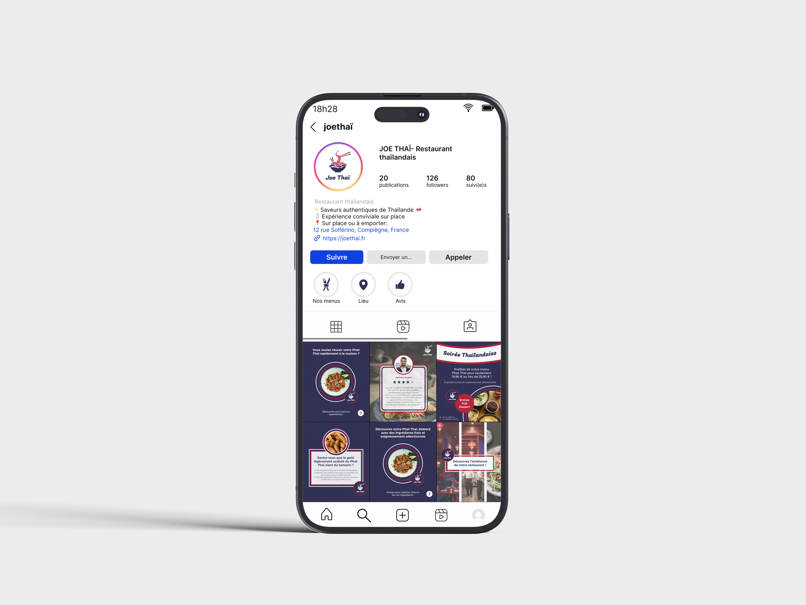
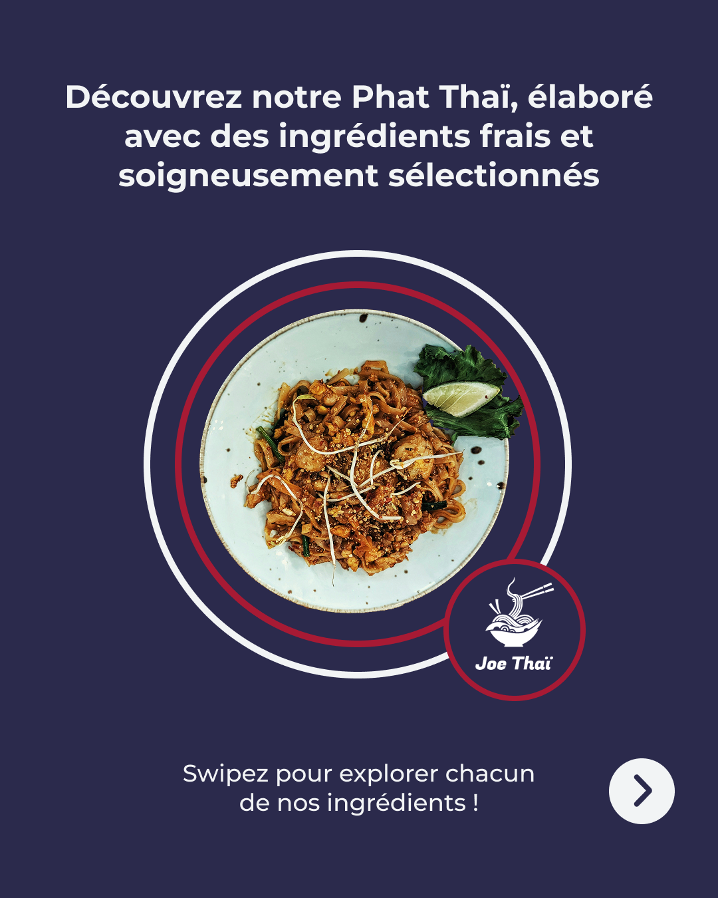
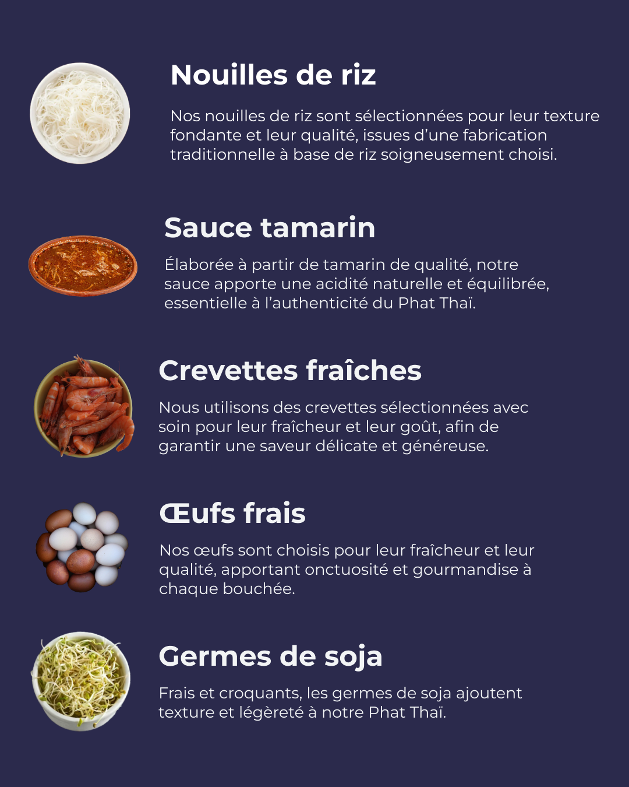

Marketing, création de contenu
2025
Dans le cadre de ce projet fictif, j’ai conçu une stratégie de communication complète pour accompagner le lancement d’un restaurant thaïlandais. L’objectif était de développer sa visibilité, rassurer les clients sur la qualité de l’offre et générer du trafic en point de vente.
J’ai travaillé sur l’ensemble des étapes : création de l’identité de marque, définition des personas, élaboration des objectifs de communication et mise en place d’une charte éditoriale. J’ai ensuite réalisé un feed Instagram structuré, avec des contenus pensés selon le parcours client (TOFU, MOFU, BOFU), afin d’attirer, engager et convertir l’audience.
Ce projet m’a permis de développer mes compétences en stratégie social media, en création de contenu et en cohérence de marque, tout en adoptant une approche centrée sur l’expérience utilisateur.


